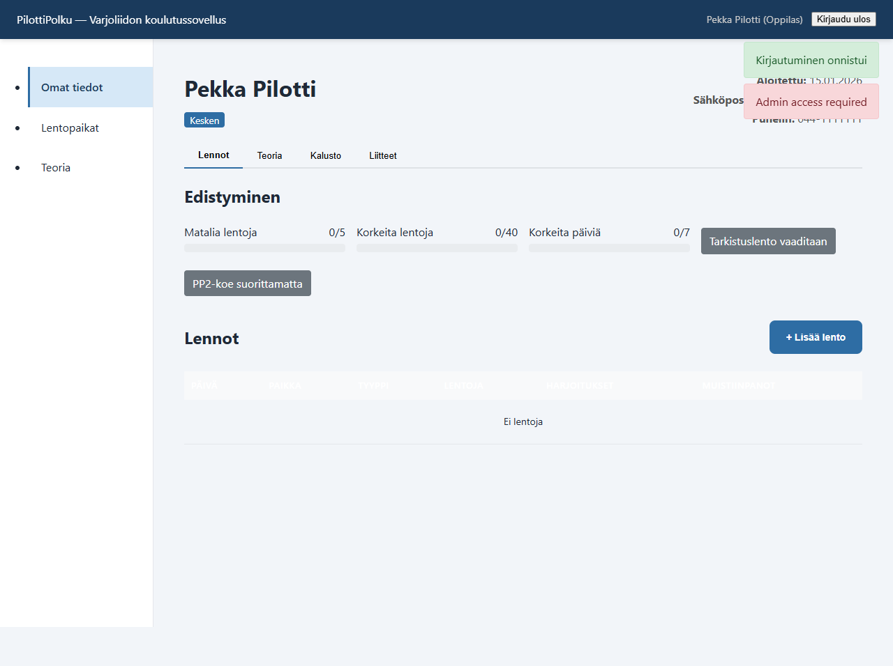
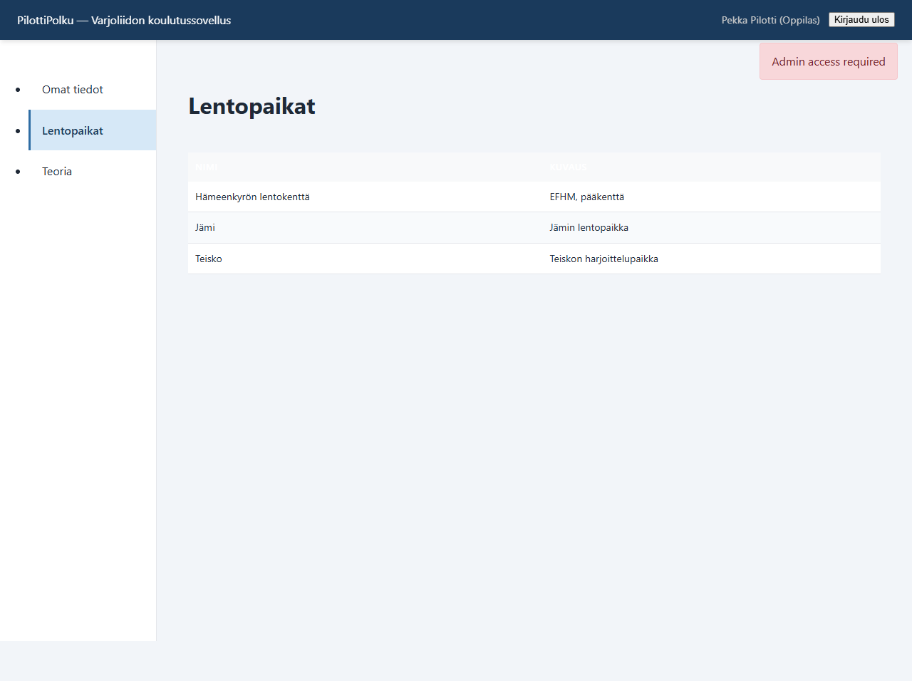
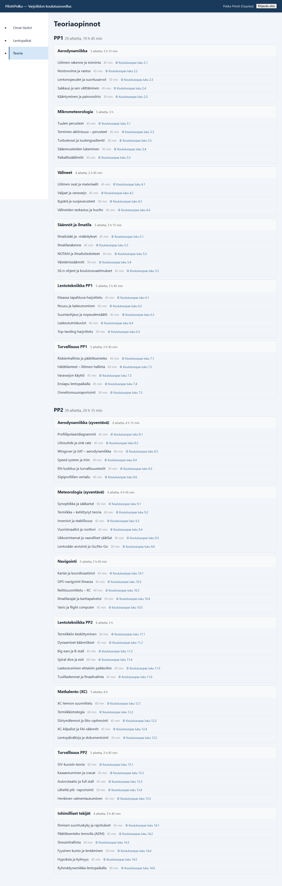

Tervetuloa
PilottiPolku on kerhosi koulutusjärjestelmä, jossa voit seurata omaa edistymistäsi: näet lentosi, teorian suoritukset, etenemisesi kohti PP1- ja PP2-tasoja sekä mahdollisen MOVA-koulutuksen (moottoroitu varjoliidin). Kurssin päätteeksi pääset lataamaan oman kurssitodistuksesi. Tämä ohje kertoo, miten pääset alkuun.
Sovellus toimii selaimessa osoitteessa https://pilottipolku.fi. Voit käyttää sitä tietokoneella, tabletilla tai puhelimella.
1. Kirjautuminen
Ohjaajasi antaa sinulle käyttäjänimen ja alkusalasanan. Kirjaudu sisään etusivulta. Jos unohdit salasanasi, käytä "Unohtuiko salasana?" -linkkiä — saat palautuslinkin sähköpostiisi.

Ensimmäisellä kerralla järjestelmä voi pyytää sinua vaihtamaan salasanan. Valitse vähintään 8 merkkiä pitkä salasana, jota kukaan muu ei voi arvata.
2. Omat tiedot
Kirjautumisen jälkeen pääset automaattisesti omaan profiiliisi. Siellä näet:
- Edistymisesi: matalat (5/5) ja korkeat (40/40) lennot, korkeat lentopäivät (7/7), tarkistuslennon tila ja PP2-kokeen tila
- Kaikki kirjatut lentosi päivittäin
- Teorian suoritustilanteen PP1- ja PP2-tasoittain
- Varusteesi (siipi, valjaat, varavarjo)
- MOVA-välilehden — jos sinulle on aloitettu MOVA-koulutus (moottoroitu varjoliidin)
Voit muokata omaa nimeäsi, sähköpostiosoitettasi ja puhelinnumeroasi klikkaamalla omaa nimeäsi sivun yläoikealla. Aukeaa pieni muokkauslomake. Pidä erityisesti sähköpostiosoite ajan tasalla — sitä käytetään, jos joskus tarvitset "Unohtuiko salasana?" -palautusta.

Lentojen kirjaaminen tapahtuu yleensä ohjaajan toimesta, mutta voit myös itse lisätä lennon "+ Lisää lento" -painikkeella. Lomakkeessa valitaan päivä, lentopaikka, tyyppi (matala / korkea / moottori), lentojen määrä, sää ja harjoitukset. Moottori-tyyppi on käytössä vain MOVA-koulutuksessa. Huomaa, että kerhossasi saattaa olla käytössä lentojen hyväksyntä — katso osio 5.
3. Lentopaikat
"Lentopaikat"-näkymässä näet kaikki kerhosi lentopaikat ja niiden kuvaukset. Näitä paikkoja käytetään lennon kirjauksen lomakkeella.

4. Teoria
Teoria-näkymässä näet kaikki PP1- ja PP2-tasojen teoria-aiheet. Suoritetut aiheet näkyvät merkittyinä. Ohjaajasi merkitsee aiheet suoritetuksi oppituntien tai itsenäisen opiskelun jälkeen.

5. Lentojen hyväksyntä
Kerhossasi saattaa olla käytössä lentojen hyväksyntä. Tämä tarkoittaa, että kun lisäät lennon itse, se ei näy heti edistymispalkissasi, vaan se odottaa ohjaajan hyväksyntää.
- Odottava lento näkyy keltaisella "Odottaa"-merkillä lentolistan Tila-sarakkeessa.
- Hyväksytty lento saa vihreän "Hyväksytty"-merkin ja lasketaan edistymiseesi.
- Jos ohjaaja hylkää lennon, se saa punaisen "Hylätty"-merkin — ota tällöin yhteys ohjaajaasi.
- Odottavien lentojen lukumäärä näkyy keltaisessa ilmoituspalkissa lennot-välilehdellä.
Jos kerhossasi ei ole hyväksyntää käytössä, kaikki lennot lasketaan suoraan edistymiseen kuten normaalisti. Ohjaajan kirjaamat lennot hyväksytään aina automaattisesti.
6. MOVA-koulutus
MOVA tarkoittaa moottoroidun B-ryhmän varjoliitimen koulutusta. Jos sinulle on aloitettu MOVA-koulutus, profiiliisi ilmestyy oma MOVA-välilehti Lennot-, Teoria-, Kalusto- ja Liitteet-välilehtien rinnalle.
MOVA-välilehdellä näet:
- Moottorilennot (X/7) — tarvitset vähintään 7 yksittäistä moottorilentoa MOVA-kelpoisuuteen. Lennot voivat olla myös samalla päivällä.
- MOVA-tarkastuslento — yksi moottorilennoista on oltava tarkkari. Jos PP2-tarkkarisi oli moottoritarkkari, se kelpaa myös MOVAan.
- PP4-tentti (matkalentotentti) — vaaditaan MOVA-kelpoisuuteen. Teorian sisältö on jo PP2-koulutuksessa, mutta tentti suoritetaan erikseen.
- MOVA-tentti — oma tentti MOVA-aiheista.
- MOVA-teoriat — 7 sektiota (Aerodynamiikka, Sääoppi, Liidin ja moottori, Säännöt ja määräykset, Lennonvalmistelu, Lentäminen, Ilmailufysiologia).
- Lista omista moottorilennoistasi.
Moottorilennot lasketaan myös 40 korkean lennon vaatimukseen, mikäli teet ne PP2-koulutuksen aikana — eli niiden ei tarvitse tulla "tavallisten" korkeiden lentojen päälle.
7. Valmistuminen ja kurssitodistus
Kun kaikki PP2-vaatimukset täyttyvät, ohjaajasi voi merkitä sinut valmistuneeksi. Valmistumisen edellytykset:
- 5 matalaa lentoa
- 40 korkeaa lentoa (moottorilennot lasketaan mukaan)
- 7 eri korkealla lentopäivää
- Tarkastuslento suoritettu
- PP2-koe suoritettu
- Kaikki PP1- ja PP2-teoria-aiheet suoritettu
Jos olet myös MOVA-koulutuksessa, voit valmistua erikseen MOVA-puolelta: ohjaajasi merkitsee MOVAn valmiiksi, kun moottorilennot, MOVA-tarkkari, PP4-tentti, MOVA-tentti ja MOVA-teoriat ovat suoritettu.
Kurssitodistus
Valmistumisen jälkeen sivun yläosaan ilmestyy vihreä "Valmistunut pilotti" -banneri ja "Lataa kurssitodistus" -painike. Todistus latautuu PDF-tiedostona ja sisältää kansilehden, teoriayhteenvedon, lentolistan ja kerhon liitteet (esim. terveydentilavakuutus).
Jos olet suorittanut sekä PP2:n että MOVAn, näet kolme nappia: Lataa yhdistetty todistus (PP2 + MOVA samassa), PP2-todistus ja MOVA-todistus. Voit ladata todistuksen niin monta kertaa kuin haluat.
8. Lentopäiväkirjan tulostus
Lennot-välilehdellä on "Tulosta lentopäiväkirja" -painike, kun sinulla on kirjattuja lentoja. Painike avaa uuden välilehden, jossa näet kaikki lentosi siistissä taulukossa: päivämäärä, paikka, tyyppi, sää, harjoitukset ja muistiinpanot. Sivun yläosassa on kerhon logo ja nimesi.
Voit tulostaa sivun paperille tai tallentaa PDF-tiedostoksi selaimen tulostustoiminnolla (Ctrl+P → Tallenna PDF:nä).
9. Tietosuoja ja omat tiedot
PilottiPolku noudattaa EU:n tietosuoja-asetusta (GDPR). Ensimmäisellä kirjautumiskerralla sinun tulee tutustua tietosuojaselosteeseen ja hyväksyä se ennen sovelluksen käyttöä. Tietosuojaseloste on aina luettavissa sivuvalikon alaosasta.
Oikeutesi
Sinulla on oikeus:
- Nähdä tietosi — kaikki sinusta tallennetut tiedot näkyvät omassa profiilissasi (lennot, teoria, varusteet, liitteet).
- Ladata tietosi — profiilinäkymässä on "Lataa omat tiedot" -painike, jolla voit ladata kaikki henkilötietosi JSON-tiedostona. Tiedoston voit avata millä tahansa tekstieditorilla.
- Pyytää korjausta — jos tiedoissasi on virhe, pyydä ohjaajaasi tai koulutuspäällikköä korjaamaan se.
- Pyytää poistoa — voit pyytää tietojesi poistamista kerhon pääkäyttäjältä. Huomaa, että koulutuskirjanpidon säilytysvelvoite (10 vuotta) voi estää välittömän poiston — tällöin tiedot anonymisoidaan.
Tietojen säilytys
Koulutustietojasi säilytetään 10 vuotta kurssin aloituksesta. Tämän jälkeen henkilötietosi anonymisoidaan tai poistetaan. Lentosuoritukset ja teoriasuoritukset voivat jäädä järjestelmään nimettöminä tilastointia varten.
10. Käyttö mobiilissa
Puhelimella käytettäessä sivuvalikko piiloutuu ja vasempaan yläkulmaan ilmestyy hampurilaispainike (☰). Paina sitä avataksesi navigoinnin. Lentolista pinoutuu helposti luettaviksi korteiksi pienellä ruudulla.
11. Vinkkejä
- Tarkista säännöllisesti, että kaikki lentosi on kirjattu oikein — ilmoita ohjaajalle, jos huomaat puutteita.
- Vihreä piste oppilaslistalla kertoo, että kaikki kurssin vaatimukset ovat täyttyneet.
- Voit vaihtaa salasanasi milloin tahansa profiilin kautta. Älä jaa salasanaasi kenenkään kanssa.
- Päivitä sähköpostiosoitteesi heti ensimmäisellä kerralla klikkaamalla omaa nimeäsi sivun yläoikealla — sitä tarvitaan jos joskus haluat käyttää "Unohtuiko salasana?" -palautusta.
- Jos olet lentänyt ulkomailla tai toisessa kerhossa, pyydä ohjaajaa kirjaamaan lennot puolestasi.
- Jos kerhossasi on lentojen hyväksyntä käytössä, lisää lentokirjaukset mahdollisimman pian — ohjaajasi hyväksyy ne seuraavalla kerralla.
- Tulosta lentopäiväkirjasi PDF:nä säännöllisesti varmuuskopioksi oman edistymisesi seurantaan.
12. Ongelmatilanteet
Jos kirjautuminen ei onnistu, tarkista käyttäjänimen ja salasanan kirjoitusasu. Jos sivu ei reagoi, päivitä selain (F5). Ongelmatilanteissa ota yhteyttä omaan ohjaajaasi.
← Takaisin sovellukseen